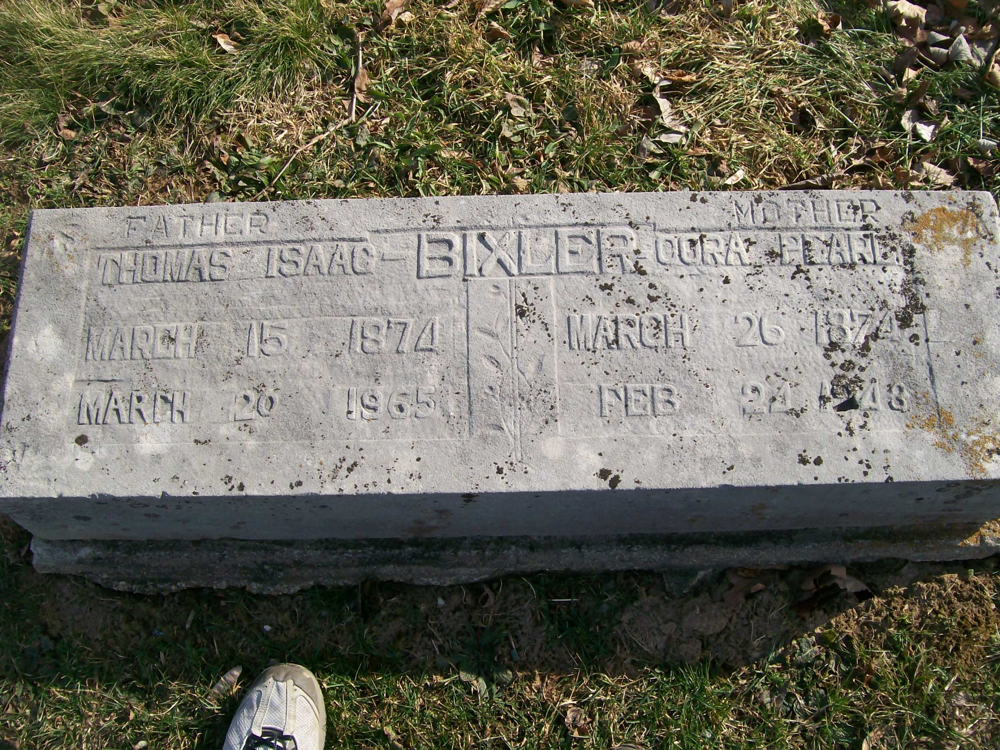

Cora Pearl Bixler (née Bufford) 1874 - 1948
[ Home ] | [ Calendar ] | [ Surnames Index ] | [ Errors ] | [ Family History ]Cora Bufford, the wife of Thomas Isaac Bixler (the third cousin three-times-removed on the mother's side of Nigel Horne), was born in Fort Wayne, Allen, Indiana, USA on 26 Mar 18741 and married Thomas (a farmer with whom she had 12 children: Rodney Jay, Ralph Voris, Thomas Isaac, Louis Edward, Pearl Luella, Willard Wallace, Nellie Mae, Edward Gabrial, Jennie, Alice Vesper, Allen Ellsworth and Rosetta) in Fort Wayne on 2 Apr 18922.
During her life, she was living in Washington, Owen, Indiana, USA on 15 Apr 19104; and in Clay, Indiana on 10 Feb 19203.
She died on 24 Feb 1948 in Owen1 and was buried in Spencer, Indiana after 24 Feb 19481.
Children
- Rodney Jay was born on 30 Sept 1894
- Ralph Voris was born on 30 Sept 1896
- Thomas Isaac was born on 19 Jan 1899
- Louis Edward was born on 26 Feb 1901
- Pearl Luella was born on 29 Aug 1903
- Willard Wallace was born on 1 Oct 1905
- Nellie Mae was born on 2 May 1908
- Edward Gabrial was born on 13 May 1910
- Jennie was born on 24 Nov 1912
- Alice Vesper was born on 25 Mar 1914
- Allen Ellsworth was born on 9 Nov 1916
- Rosetta was born on 5 Oct 1919
Citations
- U.S., Find A Grave Index, 1600s-Current Ancestry.com Operations, Inc.
- United States Marriages - Findmypast
- US Census 1920 - Findmypast (was age 45 and the wife of the head of the household)
- US Census 1910 - Findmypast (was age 36 and the wife of the head of the household)
Media
Thomas Bixler - Cora Buford - headstone

Cora Pearl Bufford

Indiana, Marriages, 1780-1992 - B~R_328052819
Family Tree

Map
Generated by ged2site. Last updated on Jul 3, 2024
Known Issues
No records of living with anyone
Adding date of burial as 'aft 24 Feb 1948'